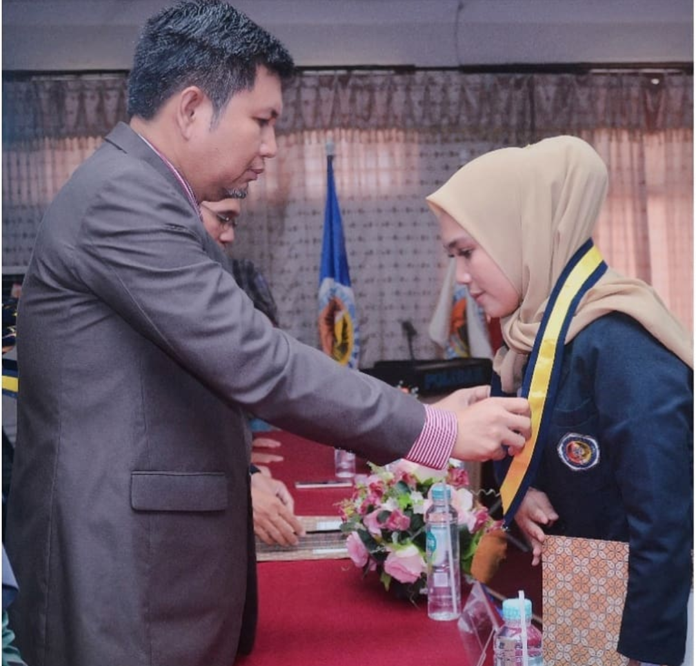

Putri Novia Khomairon
Seorang wanita karier yang pernah menimba ilmu di universitas poliban banjarmasin

Mimpi saya yang terbesar, yang ingin saya laksanakan adalah, agar mahasiswa Indonesia berkembang menjadi “manusia-manusia yang biasa”. Menjadi pemuda-pemuda dan pemudi-pemudi yang bertingkah laku sebagai seorang manusia yang normal, sebagai seorang manusia yang tidak mengingkari eksistensi hidupnya sebagai seorang mahasiswa, sebagai seorang pemuda dan sebagai seorang manusia.
Ruang Dimensi Buntuti Terus Rasa Ingin Tahu Anda??Saya bukan memiliki bakat khusus.Hanya selalu menikmati rasa ingin tahu saja?? Membaca kutipan Einstein di atas membuat kita bertanya-tanya. Seperti apa rasa ingin tahu itu? Saya selalu bertanya-tanya mengapa ada orang sukses, sementara banyak lainnya gagal? Karena itu banyak-banyaklah menghabiskan banyak waktu membaca banyak bahan. Mencari tahu koneksi berbagai hal terhadap kata??sukses??. Mengejar jawaban rasa ingin tahu Anda adalah kunci rahasia kesukesan.
Motivasi Hidup Tekun itu Tak Ternilai??Saya bukannya pintar,boleh dikatakan hanya bertahan lebih lama menghadapi masalah?? Bayangkan seekor kura-kura di tengah rimba gunung, sementara dia ingin menuju pantai. Atau,apakah Anda setekun tunas mangga terus-menerus bertumbuh,berkembang sehingga akhirnya berbuah? Ada ungkapan bagus yang popular di kalangan pegawai pos??Selembar prangko menjadi bernilai hanya karena ketika dia menempel pada surat hingga mengantarnya sampai ke tujuan??Jadilah seperti prangko,selesaikan apa yang sudah Anda mulai.
Ungkapan Hati Fokus pada saat ini??Seorang pria yang bisa menyetir dengan aman sementara mencium gadis cantik, sebenarnya tidak memberi penghargaan yang layak untuk ciumannya itu?? Einstein kok ngomongin tentang ciuman ya? Ah,itu kan hanya istilah saja.Tapi saya ingin cerita tentang kejadian ketika sesorang menjaga kebun duren di kebun. Begitu banyak kera seperti menunggu si penjaga lengah dan menyikat durian ranum di atas pohon.Kemudian seorang lainnya berkata,bahwa Anda tak akan bisa menembak dua kera sekaligus. Pengertian yang bisa disimpulkan atas kata-kata tersebut adalah??Seseorang bisa melakukan banyak hal,tapi bukan semua hal sekaligus??. Belajar untuk berada di sini,saat ini??berikan perhatian kepada apa yang sedang Anda kerjakan.Energi terfokus adalah sumber kekuatan.Itulah perbedaan antara kesuksesan dan kegagalan.
Imajinasiku Imaginasi adalah kekuatan??Imaginasi adalah segalanya.Imaginasi adalah penarik masa depan.Imaginasi lebih penting daripada pengetahuan?? Ungkapan Einstein ini sangat terkenal.Apakah Anda berimajinasi setiap hari? Imaginasi lebih penting dari pengetahuan! Imaginasi memainkan satu babak awal dalam pentas hidup masa depan Anda.Lagi, kata Einstein??Tanda kejeneniusan sesungguhnya bukanlah pengetahuan melainkan imaginasi?? Sekali lagi,apakah Anda sudah melatih otot-otot imaginasi Anda setiap hari?Jangan biarkan otot-otot itu menjadi kurus dan sakit-sakitan. Hidup tanpa imajinasi seperti mengikuti aliran sungai,pasrah mengikuti apapun kemauan dan ke mana arahnya tak memiliki kuasa atas apapun terhadap pilihan ataupun keinginan. Menyedihkan.